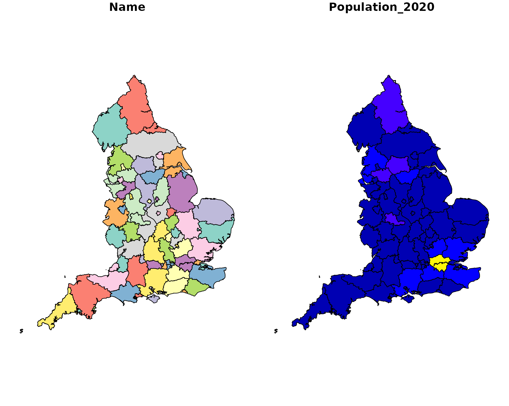

Within this vignette we show the Local Authority Districts (LADs) within the UK & Northern Ireland along with the transport regions for England
Required library imports
#library(openinfra)
library(sf) # Simple Features (sf) library for storing geospatial data
#> Linking to GEOS 3.8.0, GDAL 3.0.4, PROJ 6.3.1; sf_use_s2() is TRUE
library(tmap) # tmap library for interactive plots
library(dplyr)
#>
#> Attaching package: 'dplyr'
#> The following objects are masked from 'package:stats':
#>
#> filter, lag
#> The following objects are masked from 'package:base':
#>
#> intersect, setdiff, setequal, unionNote that these packages must already be installed before importing. To install these packages you can run the following lines:
pkgs = c('sf', 'tmap', 'dplyr')
lapply(pkgs, library, character.only = TRUE)[length(pkgs)]Local authorities of the UK
Downloading, reading and plotting the Local Authority Districts (LADs) of the United Kingdom (UK) & Northern Ireland (NI).
# Download data from the openinfra repo
url_regions_lad = "https://github.com/udsleeds/openinfra/releases/download/v0.1/Local_Authority_Districts_.May_2022._UK_BSC.geojson"
# Load data into a Simple Features frame
regions_lad = read_sf(url_regions_lad)
# Visualise the data
plot(regions_lad)
As can be seen the data contains a number of columns for each LAD including:
- LAD21NM: The name of each LAD
- Region_name: The name of the region each LAD resides in
- Level: The Authority level - either County, Combined authority or Unitary authority
Interactive map of local authorities
Here we look to create an interactive plot of all LADs within UK & NI whereby clicking on each local authority brings up additional information associated with that local authority.
We can do this by changing the tmap_mode() from 'plot' to 'view'. Note that when in tmap_mode('plot') plots are not interactive
# Set tmap mode to interactive
tmap::tmap_mode('view') # After this, all qtm() plots will be interactive
#> tmap mode set to interactive viewing
Due to a change in the spherical coordinates (S2) within the sf package that is known to cause issues (1, 2) when plotting geospatial data we make use of a known fix to use the old coordinate system by setting sf::sf_use_s2(use_s2 = FALSE)
# Here we create the interactive plots
sf::sf_use_s2(use_s2 = FALSE)
regions_lad %>% tmap::qtm(title = 'LADs of UK & NI')
Here we call another interactive map of all the LADs, but this time we have colour coded the LADs based on the region they reside in
tmap_options(max.categories = 78) # We increase max categories so that every transport region has its own colour
regions_lad %>% tmap::qtm(fill = 'Region_name', title = 'LADs of UK & NI coloured by region')Transport regions within England
Downloading, reading and plotting the transport regions of England
# Download data from the openinfra repo
url_transport_regions = "https://github.com/udsleeds/openinfra/releases/download/0.4.2/transport_authorities_2022.geojson"
# Load data into a Simple Features frame
transport_regions = read_sf(url_transport_regions)
# Visualise transport regions of England
plot(transport_regions)
LADs by Country
Northern Ireland
NI_LADs = c("Causeway Coast and Glens", "Derry City and Strabane", "Belfast",
"Fermanagh and Omagh", "Mid Ulster", "Mid and East Antrim",
"Antrim and Newtownabbey", "Armagh City, Banbridge and Craigavon",
"Newry, Mourne and Down", "Lisburn and Castlereagh",
"Ards and North Down", "Causeway Coast and Glens")
Scotland_LADs = c("South Ayrshire", "South Lanarkshire", "Scottish Borders",
"East Ayrshire", "East Lothian", "Midlothian",
"City of Edinburgh", "West Lothian", "North Lanarkshire",
"Glasgow City", "East Renfrewshire", "North Ayrshire",
"Argyll and Bute", "Renfrewshire", "Inverclyde", "Fife",
"West Dunbartonshire", "East Dunbartonshire", "Stirling",
"Falkirk", "Clackmannanshire", "Perth and Kinross",
"Dundee City", "Na h-Eileanan Siar", "Highland",
"Shetland Islands", "Orkney Islands", "Moray", "Aberdeenshire",
"Aberdeen City")
Welsh_LADs = c("Isle of Anglesey", "Flintshire", "Denbighshire", "Conwy",
"Gwynedd", " Powys", "Ceredigion", "Pembrokeshire",
"Carmarthenshire", "Monmouthshire", "Newport", "Torfaen",
"Blaenau Gwent", "Merthyr Tydfil", "Rhondda Cynon Taf", "Cardiff",
"Vale of Glamorgan", "Bridgend", "Neath Port Talbot", "Swansea",
"Caerphilly", "Wrexham")